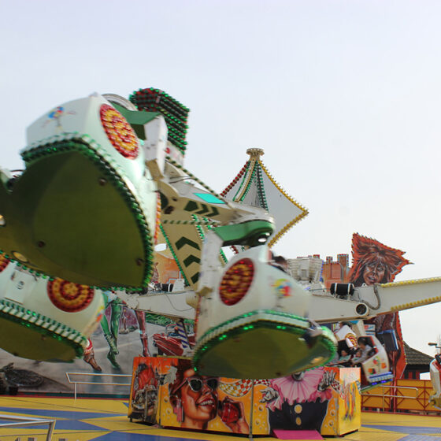

Capacity
48 riders
Type
HUSS Magic
Price
£6.00
Discovery Wristband Required
About this Ride
Magic is the only operating HUSS Magic ride in the UK. This unique attraction features four arms with rotating hubs, each holding three individually spinning cars. Each car seats four passengers and is secured by lap bars. The ride delivers an exciting and unpredictable experience as the arms raise and lower while the cars spin independently.